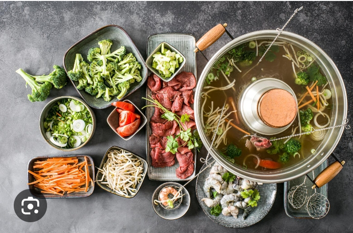
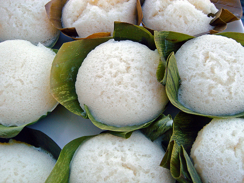

Parlons en de la cuisine chinoise
On sait tous, que la cuisine chinoise devient de plus en plus populaire dans le monde.Mais lâ maintenant je vais vous parler de sa popularité dans mon pays natale "Madagascar".En effet c'est l'une des îles qui est habité par les différentes races des personnes.Vu que les chinois sont de plus en plus nombreux dans notre pays surtout dans notre centre ville "Tananarive".
"Parlons en de leur cuisine",vous allez vous demander pourquoi parler des cuisines des autres plutôt que le notre,c'est simplement car leurs cuisines sont vraiment délicieux et aussi car nous les "Malagasy" commençant â apprécier leur cuisine de mê
me que les restaurants chinois dans notre îles augmentent.Moi personalement, je n'arrive pas â resister â leur plat, dans ce cas je vais vous donnez quelques recette sur les cuisines chinois qui m'ont vraiment plu.
vous voyez dans chacun des photos que je vous montre lâ il y a des différentes ingredients. Alors vous aussi , vous pouvez inventer votre propre ingredients de "TAPENLOU"
|
Voilà; ce sont ce qu'on appelle TAPENLOU ou encore Fendue Chinoise
Je vous conseille d'en goûté lorsque vous passerez dans une restaurant chinoise car c'est vraiment très bon.Ce plat est accompagné par plusieurs ingredient qui sont encore cru,mais lorque vous le mettez dans le boullion qui se trouve au mileu du table avec le feu au dessous ,il sera cuit rapidement.
En effets,pour les personnes qui n'ont pas le moyen d'aller au restaurant, vous pouvez le faire simplement â la maison avec quelques ingredients que vous pouvez vous achété pas la peine de depenser beaucoup car le plus important ce que vous en avez goûté.Alors si vous voulez tester â le faire â la maison ,voici alors la recette
Au cas où; vous avez du mal suivre la recette alors je vous conseille de regarder cette vidéo.
Voir la recette

|
On n'en a pas encore terminé avec la cuisine chinois il y a encore quelques plats qui a une signification trè importante pour eux. La deuxiè recette que je vais vous parler c'est la gâteau de riz.En effet, je ne pensais pas qu'on pourrait faire du gâteau avec simplement du riz, les ancêtres du chinois avaient été vraiment fort pour inventer des recettes.Je vais alorss vous montrer â ressemble ce fameux gâteau riz.
c'est â ça que ressemble le fameux gâteau de riz
ce gâteau est vraiment délicieux aussi,les mots ne suffisent pas pour decrire son saveur.Mais si vous voulez en savoir plus sur le goût ,je serais ravie que ayez regarder la recette ci dessous.Pour faire le gâteau de riz il y a plusieurs manière de le faire , c'est â dire on peut utiliser des moules comme pour les gâteau de Lune.

Voir la recette
|
â l'interieur de chaque gâteau de riz vous avez vos choix , mais il faut seulement q'elle soit sucré mais pour ces différentes photos, pour le premier photo on a utilisé la confiture d'haricot rouge, pour la dérnière on en a mis une confiture de jujupes. Tous cela c'est seulement pour vous donner des idées, quand le jour où vous voulez essayer la recette. Mais si vous voulez refaire la recette traditionnelle des chinois il est préférable d'en mettre â l'interieur des confitures d'haricots rouges , je vous montrerai dans la recette â quoi elle ressemble.
|
Vous avez sûrement dû voir entre mi-septembre et début octobre plein de boîtes carrées remplies de gâteaux dorés ornés dans les pâtisseries et supermarchés asiatiques. Ces gâteaux dorés avec des ornements s'appellent des gâteaux de lune, consommés au moment de la fête de la mi-automne, autrement appelé la fête de la Lune; 2ème fête la plus importante après le nouvel an lunaire.
C'est une fête pour célébrer la lune afin d'obtenir une récolte abondante et un moment unique pour réunir en famille. On dit aussi que c'est à cette date que la lune est la plus ronde, la plus brillante et lumineuse. Et on consomme en particulier lors de cette fête des gâteaux de lune car de par leur forme ronde ils font référence à la lune, symbolisant l'unité familiale.
Si vous souhaitez avoir plus d'informations sur cette fête et les traditions culinaires, vous pouvez aller sur cet article.
Il existe plusieurs types de gâteaux de lune : différentes formes, différentes tailles, différentes garnitures salées ou sucrées et différentes pâtes. Le gâteau le plus populaire et aussi le plus traditionnel est celui que je vous présente : à base d'une pâte légèrement sablée garnie d'une farce aux haricots rouges, ou lotus avec ou sans oeuf salé.
Réaliser des gâteaux de lune est un vrai exploit ! Trés peu de familles réalisent leurs propres gâteaux de lune, ou ne savent tout simplement pas comment les réaliser. A chaque fois que je demandais autour de moi la fabrication de ces gâteaux, j'avais droit à cette réponse "oh non, c'est trop compliqué, trop long" ou "je ne sais pas comment c'est fabriqué". Et moi naivement je me suis dit que cela ne doit pas être si compliqué que cela, puisque cela reste de la pâtisserie.
En soi ce n'est vraiment pas compliqué, c'est juste le process qui est très long car certains produits essentiels pour faire ces gâteaux de lune n'existent pas dans les commerces et ni sur le e-commerce en France, il faut donc tout fabriquer soi-même. Les deux produits qu'on ne trouve pas sont le kansui, autrement appelé Lye Water ou Alkaline water et le golden syrup (sirop doré). On peut trouver ce dernier sur des sites e-commerce, mais il coûte très cher pour le peu de quantité dont on aura besoin.
Le lye water ou kansui est tout simplement du bicarbonate de soude alimentaire dilué, il contient 80% de carbonate de potassium et 20% de bicarbonate de soude. On doit préalablement le cuire au four afin de diminuer son taux de ph puis le diluer à l'eau. Il est utilisé pour réguler l'acidité qui est introduit par le golden syrup. La quantité de kansui aidera à donner une texture tendre et permettra d'obtenir une belle coloration. Il est très utile pour les nouilles de ramen également !
Le golden syrup ressemble à du miel au niveau de la texture et de la couleur, il est réalisé à base d'eau, de sucre et de jus de citron. Il va donner cet aspect tendre et moelleux du gâteau de lune et permettre de garder sa forme malgré la finesse de pâte lors de la confection du gâteau, et peut être façonné en motifs délicats.
|
Voici à quoi ressemble le gâteau de lune
|
|
|
Ce sont les exemples de gâteaux de Lune,si vous organisez une fête chez vous pouvez en faire car ce gâteau à un signe très important surtout pour les chinois pendant leur fêtes traditionnelles même quand vous regardez ces gâteaux vous verrez un signe particulier qui se trouve au dessus de chaque gâteau .Tout cela pour vous dire que ce gateau non seulement il est bon mais il a un histoire .
Voir la recette
|